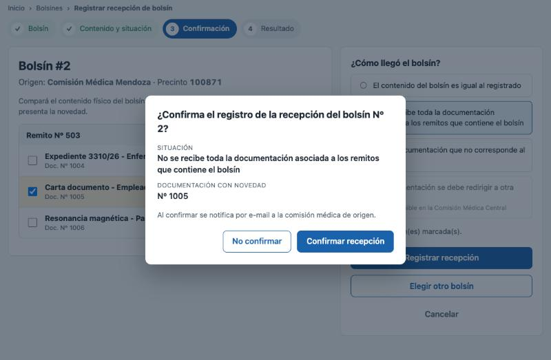

PPAI2026_3K2_G14_E2_Diseño.pdf.
Los diagramas se dibujan con Mermaid, por lo que hace falta conexión a internet al abrir el archivo.
Facultad Regional Córdoba
Ing. en Sistemas de Información
Proyecto Práctico de Aplicación Integrador
DSI
Proyecto Práctico de Aplicación Integrador
Entrega 2: Diseño
Caso de estudio: Bolsines
Tema de la entrega: Rediseño de la realización del CU 28 Registrar recepción de bolsín con el patrón Strategy, implementación y diseño de las interfaces de usuario
| Universidad / Facultad | Universidad Tecnológica Nacional – Facultad Regional Córdoba |
|---|---|
| Cátedra | Diseño de Sistemas de Información |
| Curso | 3K2 |
| Número de grupo | 14 (grupo par) |
| Número de entrega | 2 |
| Fecha de entrega | 17 de noviembre de 2026 |
| Docentes del curso | Ing. Cecilia Massano, Ing. Valeria Abdala, Ing. María Salomé Sánchez Cassia, Mateo Crespo |
| Docente tutor | Ing. Valeria Abdala |
Integrantes del grupo
| Apellido y nombre | Legajo | Correo electrónico |
|---|---|---|
| Altamirano Decicco, Juan Cruz | 403209 | juanetealtamirano@gmail.com |
| Arata Robledo, Santino | 406800 | santinoaratarobledo@gmail.com |
| Caramuti, Francisco | 406401 | franciscocaramuti@gmail.com |
| Monge, Jeremías | 404669 | jeremonge10@gmail.com |
| Pasquini, Lucas Valentín | 402256 | lucas.pasqui24@gmail.com |
| Porello, Juan | 402622 | juanporello11@gmail.com |
| Righetti, Agustín | 403683 | agurighetti@gmail.com |
| Scozzari Aldrey, Ignacio | 404929 | ignaciosaldrey@gmail.com |
| Vissani, Bruno | 406816 | Brunovissani47@gmail.com |
1. Identificación del patrón implementado
Patrón: Strategy (Gamma et al., patrón de comportamiento), acordado con la docente tutora.
1.1 Problema que se propone resolver
En el paso 7 del CU 28 el Encargado de Bolsines indica en qué situación llegó el bolsín. Según la regla de negocio Recepción de un Bolsín en una CM Destino existen cuatro situaciones y cada una actualiza los remitos y la documentación de manera distinta:
| Opción de recepción | Remitos | Documentación |
|---|---|---|
| 1. El contenido es igual al registrado | Recibido y Aceptado | Toda: Recibida y Aceptada |
| 2. No se recibe toda la documentación | Recibido y Aceptado Parcial (los que tienen faltantes) | Faltante: No Recibida. Resto: Recibida y Aceptada |
| 3. Documentación que no corresponde al destino | Recibido y Aceptado Parcial (los que tienen rechazos) | Indicada: Recibida y Rechazada. Resto: Recibida y Aceptada |
| 4. Documentación para redirigir a otra área (solo CMC) | Recibido y Aceptado | Indicada: Para Redirigir (con área destino). Resto: Recibida y Aceptada |
En la realización de análisis (Entrega 1) toda esa lógica quedaba en el método actualizarEstados() del
GestorRecepcionBolsin. Al incorporar los flujos alternativos A3, A4 y A5 ese método se convierte en una
estructura condicional que crece con cada situación nueva, mezcla cuatro algoritmos distintos en la clase de control y
obliga a modificar el gestor cada vez que cambia una regla de recepción.
1.2 Justificación
- Familia de algoritmos intercambiables: las cuatro opciones resuelven el mismo objetivo (dejar remitos y documentación en el estado que corresponde) con algoritmos diferentes, y la elección se hace en tiempo de ejecución, cuando el EB selecciona la opción.
- Elimina el condicional del gestor: el gestor (Context) conserva una referencia a
EstrategiaRecepciony delega con un único mensaje polimórficoregistrarRecepcion(). - Abierto a extensión: una nueva situación de recepción se agrega como una clase nueva, sin tocar el gestor ni las estrategias existentes.
- Cohesión y expertos: cada estrategia conoce solo su regla; las entidades siguen siendo las expertas en cambiar su propio estado (
Remito.recibir(),Documentacion.actualizarEstado()). - Lo que no varía queda en el contexto: el bolsín siempre pasa a Recibido en CM destino, por eso ese cambio lo sigue haciendo el gestor.
| Rol del patrón | Clase del diseño |
|---|---|
| Context | GestorRecepcionBolsin |
| Strategy | EstrategiaRecepcion (interfaz) |
| ConcreteStrategy | RecepcionCompleta, RecepcionParcial, RecepcionNoCorrespondeDestino, RecepcionParaRedirigir |
| Cliente | PantallaRegistrarRecepcion (informa la opción elegida por el EB) |
2. Vista estática de la realización de caso de uso de diseño
classDiagram
direction TB
class PantallaRegistrarRecepcion {
<<boundary>>
-gestor: GestorRecepcionBolsin
+opcionRegistrarRecepcionBolsin() InicioResponse
-habilitarPantalla() InicioResponse
+tomarFiltroBolsines(request: FiltrarBolsinesRequest) List~BolsinResponse~
+tomarSeleccionBolsin(request: SeleccionarBolsinRequest) DetalleBolsinResponse
+tomarSeleccionOpcion(request: SeleccionarOpcionRequest) PedidoConfirmacionResponse
+tomarConfirmacion(request: ConfirmacionRequest) ResultadoRecepcionResponse
+tomarCancelacion() MensajeResponse
}
class GestorRecepcionBolsin {
<<control>>
-estrategiasDisponibles: List~EstrategiaRecepcion~
-estrategia: EstrategiaRecepcion
-empleadoLogueado: Empleado
-cmLogueada: ComisionMedica
-numeroBolsinSeleccionado: Integer
-opcionSeleccionada: Integer
-documentacionSeleccionada: List~Integer~
-areaDestino: String
-fechaHoraActual: LocalDateTime
+nuevaRecepcionBolsin() InicioResponse
+tomarFiltroBolsines(numeroPrecinto: String, cmOrigen: String) List~BolsinResponse~
+tomarSeleccionBolsin(numeroBolsin: Integer) DetalleBolsinResponse
+tomarSeleccionOpcion(opcion: Integer, numerosDocumentacion: List~Integer~, areaDestino: String) PedidoConfirmacionResponse
+tomarConfirmacion(confirma: boolean) ResultadoRecepcionResponse
+cancelarCU() void
-buscarCMLogueado() void
-buscarBolsinesEnviados() List~Bolsin~
-buscarRemitos(bolsin: Bolsin) List~RemitoResponse~
-buscarOpcionesRecepcion(bolsin: Bolsin) List~OpcionRecepcionResponse~
-setEstrategia(estrategia: EstrategiaRecepcion) void
-obtenerFechaYHora() void
-buscarEstados() List~Estado~
-actualizarEstados(bolsin: Bolsin, estados: List~Estado~) void
-notificarRecepcionBolsin(bolsin: Bolsin) List~NotificacionResponse~
-finCU() void
}
class EstrategiaRecepcion {
<<interface>>
+getDescripcion() String
+requiereSeleccionDocumentacion() boolean
+requiereAreaDestino() boolean
+esAplicable(bolsin: Bolsin) boolean
+registrarRecepcion(bolsin: Bolsin, numerosDocumentacion: List~Integer~, areaDestino: String, estados: List~Estado~, responsable: Empleado, fechaHora: LocalDateTime) void
+buscarEstado(estados: List~Estado~, criterio: Predicate~Estado~)$ Estado
}
class RecepcionCompleta {
+getDescripcion() String
+requiereSeleccionDocumentacion() boolean
+requiereAreaDestino() boolean
+esAplicable(bolsin: Bolsin) boolean
+registrarRecepcion(...) void
}
class RecepcionParcial {
+getDescripcion() String
+requiereSeleccionDocumentacion() boolean
+requiereAreaDestino() boolean
+esAplicable(bolsin: Bolsin) boolean
+registrarRecepcion(...) void
}
class RecepcionNoCorrespondeDestino {
+getDescripcion() String
+requiereSeleccionDocumentacion() boolean
+requiereAreaDestino() boolean
+esAplicable(bolsin: Bolsin) boolean
+registrarRecepcion(...) void
}
class RecepcionParaRedirigir {
+getDescripcion() String
+requiereSeleccionDocumentacion() boolean
+requiereAreaDestino() boolean
+esAplicable(bolsin: Bolsin) boolean
+registrarRecepcion(...) void
}
class Bolsin
class Remito
class Estado
class Empleado
<<entity>> Bolsin
<<entity>> Remito
<<entity>> Estado
<<entity>> Empleado
PantallaRegistrarRecepcion ..> GestorRecepcionBolsin
GestorRecepcionBolsin o--> "1" EstrategiaRecepcion : estrategia
GestorRecepcionBolsin ..> Bolsin
GestorRecepcionBolsin ..> Estado
GestorRecepcionBolsin ..> Empleado
EstrategiaRecepcion <|.. RecepcionCompleta
EstrategiaRecepcion <|.. RecepcionParcial
EstrategiaRecepcion <|.. RecepcionNoCorrespondeDestino
EstrategiaRecepcion <|.. RecepcionParaRedirigir
EstrategiaRecepcion ..> Bolsin
EstrategiaRecepcion ..> Remito
EstrategiaRecepcion ..> Estado
Figura 1a – Vista estática del CU 28: estructura resultante de la aplicación del patrón Strategy
classDiagram
direction TB
class Bolsin {
<<entity>>
-numeroBolsin: Integer
-fecha: LocalDate
-peso: Integer
-numeroPrecinto: String
+esTuCMDestino(cm: ComisionMedica) boolean
+sosEnviado() boolean
+tuDestinoEsCentral() boolean
+contieneDocumentaciones(numeros: List~Integer~) boolean
+recibir(estado: Estado, responsable: Empleado, fechaHora: LocalDateTime) void
+crearCambioEstado(estado: Estado, responsable: Empleado, fechaHora: LocalDateTime) void
-obtenerCambioEstadoActual() CambioEstadoBolsin
+getRemitos() List~Remito~
}
class Remito {
<<entity>>
-numero: Integer
-fecha: LocalDate
+contieneAlgunaDocumentacion(numeros: List~Integer~) boolean
+recibir(estadoRemito: Estado, estadoDocAceptada: Estado, numerosDocConNovedad: List~Integer~, estadoDocConNovedad: Estado, areaCMCDestino: String, responsable: Empleado, fechaHora: LocalDateTime) void
+setEstado(estado: Estado) void
}
class DetalleRemito {
<<entity>>
-areaCMCDestino: String
+esDeDocumentacion(numero: Integer) boolean
+actualizarEstadoDocumentacion(estado: Estado, responsable: Empleado, fechaHora: LocalDateTime) void
+setAreaCMCDestino(area: String) void
}
class Documentacion {
<<entity>>
-numero: Integer
-asunto: String
-fechaPase: LocalDate
+esTuNumero(numero: Integer) boolean
+actualizarEstado(estado: Estado, responsable: Empleado, fechaHora: LocalDateTime) void
-crearCambioEstado(estado: Estado, responsable: Empleado, fechaHora: LocalDateTime) void
-obtenerCambioEstadoActual() CambioEstadoDocumentacion
}
class CambioEstadoBolsin {
<<entity>>
-fechaHoraInicio: LocalDateTime
-fechaHoraFin: LocalDateTime
+sosActual() boolean
+sosEnviado() boolean
+setFechaHoraFin(fechaHora: LocalDateTime) void
}
class CambioEstadoDocumentacion {
<<entity>>
-fechaHoraInicio: LocalDateTime
-fechaHoraFin: LocalDateTime
+sosActual() boolean
+setFechaHoraFin(fechaHora: LocalDateTime) void
}
class Estado {
<<entity>>
-ambito: String
-nombre: String
-descripcion: String
+esAmbitoBolsin() boolean
+esAmbitoRemito() boolean
+esAmbitoDocumentacion() boolean
+esEnviado() boolean
+esRecibidoEnCMDestino() boolean
+esRecibidoYAceptado() boolean
+esRecibidoYAceptadoParcial() boolean
+esNoRecibida() boolean
+esRecibidoYRechazado() boolean
+esParaRedirigir() boolean
}
class Empleado {
<<entity>>
-nombre: String
-apellido: String
-email: String
+getCM() ComisionMedica
}
class ComisionMedica {
<<entity>>
-codigo: String
-nombre: String
-email: String
-central: boolean
+sosVos(otra: ComisionMedica) boolean
+esCentral() boolean
}
Bolsin "1" o--> "1..*" Remito : remitos
Bolsin "1" *--> "1..*" CambioEstadoBolsin : cambiosEstado
Bolsin --> "1" ComisionMedica : origen
Bolsin --> "1" ComisionMedica : destino
Remito "1" *--> "1..*" DetalleRemito : detalleRemito
Remito --> "1" Estado : estado
DetalleRemito --> "1" Documentacion : documentacion
Documentacion "1" *--> "1..*" CambioEstadoDocumentacion : cambiosEstado
CambioEstadoBolsin --> "1" Estado : estado
CambioEstadoBolsin --> "1" Empleado : responsable
CambioEstadoDocumentacion --> "1" Estado : estado
CambioEstadoDocumentacion --> "1" Empleado : responsable
Empleado --> "1" ComisionMedica : asignadoA
Figura 1b – Vista estática del CU 28: entidades que colaboran en el registro de la recepción
Las estrategias concretas implementan registrarRecepcion() con la misma firma de la interfaz. Visibilidad: + público, - privado. Se omiten Sesion, Usuario y
TipoDocumento porque no participan de la estructura resultante de la aplicación del patrón; los getters
simples tampoco se muestran. Las estrategias concretas redefinen los cinco métodos de la interfaz.
3. Vista dinámica de la realización de caso de uso de diseño
Se modela la parte del escenario que cambia por la aplicación del patrón: desde que el EB selecciona la opción de
recepción (paso 8) hasta la actualización de estados (paso 11). El escenario mostrado es el flujo descripto, con la
estrategia RecepcionCompleta; con otra opción solo cambia el objeto estrategia que recibe el mensaje
registrarRecepcion().
sequenceDiagram autonumber actor EB as Encargado
de Bolsines participant P as :Pantalla
RegistrarRecepcion participant G as :Gestor
RecepcionBolsin participant E as estrategia:
RecepcionCompleta participant B as seleccionado:
Bolsin participant CB as actual:
CambioEstadoBolsin participant NCB as nuevo:
CambioEstadoBolsin participant R as :Remito participant DR as :DetalleRemito participant D as :Documentacion participant CD as actual:CambioEstado
Documentacion participant NCD as nuevo:CambioEstado
Documentacion participant ES as :Estado EB->>P: tomarSeleccionOpcion(opcion) P->>G: tomarSeleccionOpcion(opcion, docs, area) G->>E: esAplicable(bolsin) G->>E: requiereSeleccionDocumentacion() G->>E: requiereAreaDestino() G->>G: setEstrategia(estrategia) G->>E: getDescripcion() G-->>P: pedido de confirmación P-->>EB: pedirConfirmacion() EB->>P: tomarConfirmacion() P->>G: tomarConfirmacion(confirma) G->>G: obtenerFechaYHora() G->>G: buscarEstados() G->>G: actualizarEstados(bolsin, estados) loop Estados [mientras haya estados] G->>ES: esAmbitoBolsin() G->>ES: esRecibidoEnCMDestino() end G->>B: recibir(estado, resp, fh) B->>B: obtenerCambioEstadoActual() B->>CB: setFechaHoraFin(fh) B->>NCB: new(fh, estado, resp) G->>E: registrarRecepcion(bolsin, docs, area, estados, resp, fh) loop Estados [mientras haya estados] E->>ES: esAmbitoRemito() E->>ES: esAmbitoDocumentacion() E->>ES: esRecibidoYAceptado() end E->>B: getRemitos() loop Remitos del bolsín [mientras haya remitos] E->>R: recibir(estRemito, estDocAceptada, docsNovedad, estDocNovedad, area, resp, fh) R->>R: setEstado(estadoRemito) loop Detalles del remito [mientras haya detalles] R->>DR: esDeDocumentacion(numero) R->>DR: actualizarEstadoDocumentacion(est, resp, fh) DR->>D: actualizarEstado(est, resp, fh) D->>D: obtenerCambioEstadoActual() D->>CD: setFechaHoraFin(fh) D->>NCD: new(fh, estado, resp) end end G->>G: notificarRecepcionBolsin(bolsin) G->>G: finCU() G-->>P: resultado de la recepción P-->>EB: informarEjecucion()
Figura 2 – Vista dinámica del rediseño del CU 28 (selección de opción, confirmación y actualización de estados)
Abreviaturas usadas en los mensajes: docs = numerosDocumentacion, area = areaDestino, resp = responsable (Empleado), fh = fechaHora, est = estado. Las firmas completas están en la vista estática.
pedirConfirmacion(), informarEjecucion(), etc.)
se resuelven como retorno de los métodos por tratarse de una API REST, igual que en el ejemplo de la cátedra.
Los datos del bolsín, sus remitos y las opciones de recepción se devuelven en una única respuesta al seleccionar el bolsín,
para no hacer una llamada por remito.
4. Implementación del rediseño
4.1 Detalles de implementación
| Lenguaje de programación | Java 21 |
|---|---|
| Framework de programación | Spring Boot 3.3 (Spring Web para la API REST). Frontend con React 18 y Vite. |
| Tecnología | Web (cumple el RNF 1 de la ERS) |
| Base de datos | H2, persistida en archivo (backend/data/bolsines.mv.db) |
| Framework de persistencia | Spring Data JPA con Hibernate |
4.2 Consistencia con el modelado
| Elemento del modelo | Implementación |
|---|---|
| «boundary» PantallaRegistrarRecepcion | boundary/PantallaRegistrarRecepcion.java (controller REST, punto de entrada) y la interfaz React (frontend/src/App.jsx) |
| «control» GestorRecepcionBolsin (Context) | control/GestorRecepcionBolsin.java (servicio) |
| Strategy y estrategias concretas | paquete strategy/ |
| «entity» del dominio | paquete entity/, mapeadas con JPA |
| CU 29 Notificar recepción de bolsín (include) | boundary/InterfazEmail.java: el envío se simula, el e-mail se muestra en pantalla y en el log |
El gestor no devuelve entidades a la pantalla: arma representaciones con datos primitivos (DTO). Las entidades colaboran
entre sí aplicando Experto: por ejemplo el gestor pregunta bolsin.sosEnviado() y es el bolsín quien consulta
a su cambio de estado actual, que a su vez le pregunta al Estado.
4.3 Flujos que se pueden ejecutar
| Flujo | Cómo demostrarlo |
|---|---|
| Flujo descripto | Usuario lgomez (CM Córdoba) → bolsín 1 → opción 1 → Confirmar |
| A1: precinto inexistente | Filtrar por precinto 999999 |
| A2: CM de origen inexistente | Filtrar por CM de origen Salta |
| A3: no se recibe toda la documentación | Bolsín 2 → opción 2 → marcar la documentación faltante |
| A4: documentación que no corresponde | Bolsín 3 → opción 3 → marcar la documentación |
| A5: redirigir a otra área | Usuario mperez (CMC) → bolsín 5 → opción 4 → indicar área |
| A6: el EB no confirma | "No confirmar" en el diálogo de confirmación |
| Obs. 1: cancelar el CU | Botón Cancelar, disponible en todos los pasos |
5. Diseño de las interfaces de usuario
Las pantallas del CU 28 se diseñaron para el actor Encargado de Bolsines aplicando los siguientes patrones de diseño de GUI.
5.1 Patrones de GUI aplicados
| Patrón de diseño de GUI | Dónde se aplica | Necesidad del usuario |
|---|---|---|
| Asistente / indicador de pasos (Wizard) | Barra de pasos: Bolsín → Contenido y situación → Confirmación → Resultado | Saber siempre dónde está y cuánto falta |
| Migas de pan (Breadcrumbs) | Inicio › Bolsines › Registrar recepción de bolsín | Ubicación dentro del sistema |
| Listado con filtros (List builder / Filter) | Bolsines pendientes, filtro por precinto y CM de origen | Encontrar rápido el bolsín que tiene en la mano |
| Maestro–detalle | Al seleccionar un bolsín se muestran sus remitos y documentación agrupados | Comparar contra el contenido físico |
| Revelación progresiva | Las casillas de documentación y el campo "Área" aparecen solo si la opción elegida los necesita | No abrumar; pedir solo lo necesario |
| Diálogo modal de confirmación | Antes de registrar, con resumen de la situación elegida | Evitar errores irreversibles |
| Prevención de errores | Opción 4 deshabilitada si la CM no es la Central; botón "Registrar" inactivo hasta completar lo requerido | No poder equivocarse |
| Retroalimentación y estado vacío | Mensajes en línea para A1/A2, pantalla "no hay bolsines", resultado con estados por color | Entender qué pasó y qué hacer después |
| Salida de emergencia | Botón Cancelar visible en todos los pasos (Observación 1 del CU) | Control y libertad |
5.2 Pantallas del caso de uso




Figura 3 – Pantallas del CU 28 Registrar recepción de bolsín (capturas de la aplicación en ejecución)